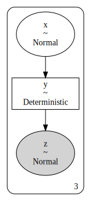
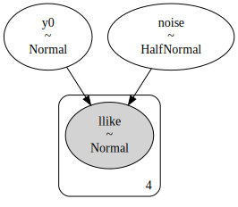
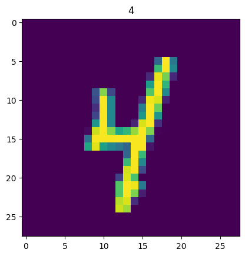
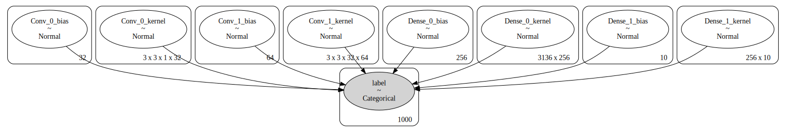

How to use JAX ODEs and Neural Networks in PyMC
Or anything else, really

PyMC strength comes from its expressiveness. If you have a data-generating process and want to infer parameters of interest, all you need to do is write it down, choose some priors and let it sample.
Sometimes this is easier said than done, especially the "write it down" part. With Python's rich ecosystem, it's often the case that you already have a generative function, but it's written in another framework, and you would like to use it in PyMC. Thanks to the highly composable nature of the PyMC backend, this is simple. Even simpler if that framework can also provide you gradients for free!
In this blog post, we show how you can reuse code from another popular auto-diff framework, JAX, directly in PyMC.
We will start with a dummy example by simply wrapping
a pure function that already exists under pymc.math,
and then show two real examples:
reusing an ODE Solver from the Diffrax library
and a CNN from the Flax library.
This blog post won't explain in detail why we do things the way they are shown,
but will only show you how to do it.
If you want to have a better understanding, you should check the PyMC example
How to wrap a JAX function for use in PyMC
and the relevant PyTensor documentation of Op.
Without further ado, let's import some stuff.
import matplotlib.pyplot as plt import numpy as np import pytensor import pytensor.tensor as pt from pytensor.graph import Apply, Op from pytensor.link.jax.dispatch import jax_funcify import jax import jax.numpy as jnp import pymc as pm import pymc.sampling.jax
Wrapping a pure JAX function
In this first example,
we will wrap the jax.numpy.exp function so you can use it in PyMC models.
This is purely demonstrative, as you could use pymc.math.exp.
We first create a function that encapsulates the operation (or series of operations) that we care about. We also save the jitted function into a variable.
def custom_op_jax(x): return jnp.exp(x) jitted_custom_op_jax = jax.jit(custom_op_jax)
JAX's jit function accepts a function and returns a function,
meaning that we can call on jitted_custom_op_jax:
jitted_custom_op_jax(np.arange(3))
We then create the function that computes the vector-jacobian product (vjp) needed for PyTensor gradients. JAX vjp takes as inputs a computational graph, expressed as a function, and its inputs. It returns the evaluated graph, which we don't need, and a partial function that computes the vjp, given the output gradients, which is what we need for PyTensor.
def vjp_custom_op_jax(x, gz): _, vjp_fn = jax.vjp(custom_op_jax, x) return vjp_fn(gz)[0] jitted_vjp_custom_op_jax = jax.jit(vjp_custom_op_jax)
Now for the meaty part! We create two PyTensor Ops, one for the operation we care about and another for the vjp of that operation. This is how we can glue external code into PyMC's backend. (Note here: It's a bit verbose, but nothing too complicated.)
Here's what's happening below.
We subclass from the Op class
and implement 3 methods: make_node, perform and grad.
For the vjp we need to implement only the first two.
# The CustomOp needs `make_node`, `perform` and `grad`. class CustomOp(Op): def make_node(self, x): # Create a PyTensor node specifying the number and type of inputs and outputs # We convert the input into a PyTensor tensor variable inputs = [pt.as_tensor_variable(x)] # Output has the same type and shape as `x` outputs = [inputs[0].type()] return Apply(self, inputs, outputs) def perform(self, node, inputs, outputs): # Evaluate the Op result for a specific numerical input # The inputs are always wrapped in a list (x,) = inputs result = jitted_custom_op_jax(x) # The results should be assigned inplace to the nested list # of outputs provided by PyTensor. If you have multiple # outputs and results, you should assign each at outputs[i][0] outputs[0][0] = np.asarray(result, dtype="float64") def grad(self, inputs, output_gradients): # Create a PyTensor expression of the gradient (x,) = inputs (gz,) = output_gradients # We reference the VJP Op created below, which encapsulates # the gradient operation return [vjp_custom_op(x, gz)] class VJPCustomOp(Op): def make_node(self, x, gz): # Make sure the two inputs are tensor variables inputs = [pt.as_tensor_variable(x), pt.as_tensor_variable(gz)] # Output has the shape type and shape as the first input outputs = [inputs[0].type()] return Apply(self, inputs, outputs) def perform(self, node, inputs, outputs): (x, gz) = inputs result = jitted_vjp_custom_op_jax(x, gz) outputs[0][0] = np.asarray(result, dtype="float64") # Instantiate the Ops custom_op = CustomOp() vjp_custom_op = VJPCustomOp()
How do we know that we've implemented the Ops correctly?
To do that, we can use the pytensor verify_grad utility:
pytensor.gradient.verify_grad(custom_op, (np.arange(5, dtype="float64"),), rng=np.random.default_rng())
It didn't raise an Error, so we're clear!
Now we can use our wrapped Op directly with PyMC models:
with pm.Model() as model: x = pm.Normal("x", shape=(3,)) y = pm.Deterministic("y", custom_op(x)) # HERE IS WHERE WE USE THE CUSTOM OP! z = pm.Normal("z", y, observed=[1, 2, 0])
PyMC provides model_to_graphviz to visualize the model graph:
pm.model_to_graphviz(model)

Part of verifying that the Op's API works with PyMC
is in evaluating the model's logp and dlogp.
First, the logp function:
# Compute the logp at the initial point ip = model.initial_point() logp_fn = model.compile_fn(model.logp(sum=False)) logp_fn(ip)
[array([-0.91893853, -0.91893853, -0.91893853]), array([-0.91893853, -1.41893853, -1.41893853])]
And now the dlogp function:
dlogp_fn = model.compile_fn(model.dlogp()) dlogp_fn(ip)
array([ 0., 1., -1.])
The numerical values of the evaluated logp and dlogp are correct in both cases.
If we want to use PyTensor's JAX backend, we have to, somewhat paradoxically, tell PyTensor how to convert our Ops to JAX code. PyTensor does not know it was JAX code to begin with! Fortunately, this is pretty simple by simply returning the original functions.
Note that we don't return the jitted functions, because we want PyTensor to use JAX to jit the whole JAX graph together.
@jax_funcify.register(CustomOp) def custom_op_jax_funcify(op, **kwargs): return custom_op_jax @jax_funcify.register(VJPCustomOp) def vjp_custom_op_jax_funcify(op, **kwargs): return vjp_custom_op_jax
Now we can compile to the JAX backend and get the same results!
First with the logp:
# Now using the JAX backend ip = model.initial_point() logp_fn = model.compile_fn(model.logp(sum=False), mode="JAX") logp_fn(ip)
[DeviceArray([-0.91893853, -0.91893853, -0.91893853], dtype=float64), DeviceArray([-0.91893853, -1.41893853, -1.41893853], dtype=float64)]
And now with the dlogp:
dlogp_fn = model.compile_fn(model.dlogp(), mode="JAX") dlogp_fn(ip)
DeviceArray([[ 0., 1., -1.]], dtype=float64)
Wrapping a Diffrax ODE Solver
Let's move on to a more complicated situation.
We will wrap an ODE solver from the Diffrax library in this second example.
It will be a straightforward example with a single variable parameter:
The initial point y0.
First, we import diffrax:
import diffrax
Then we set up a simple ODE.
vector_field = lambda t, y, args: -y term = diffrax.ODETerm(vector_field) solver = diffrax.Dopri5() saveat = diffrax.SaveAt(ts=[0., 1., 2., 3.]) stepsize_controller = diffrax.PIDController(rtol=1e-5, atol=1e-5) sol = diffrax.diffeqsolve(term, solver, t0=0, t1=3, dt0=0.1, y0=1, saveat=saveat, stepsize_controller=stepsize_controller) print(sol.ts) # DeviceArray([0. , 1. , 2. , 3. ]) print(sol.ys) # DeviceArray([1. , 0.368, 0.135, 0.0498])
DeviceArray([0. , 1. , 2. , 3. ]) DeviceArray([1. , 0.368, 0.135, 0.0498])
For those who are not familiar with ODEs,
the vector_field is the derivative of the function y with respect to t,
and the term is the ODE itself.
The solver is the method used to solve the ODE;
the saveat is the collection of times at which we want to save the solution;
and the stepsize_controller is used to control the step size of the solver.
Finally, sol is the solution to the ODE, evaluated at the saveat points.
From this point onward, the rest of the code should look very similar to what we did above.
Firstly, we need a JAX function that we will wrap.
Our function will return the solutions for ys, given a starting point y0.
The other parameters will be constant for this example,
but they could also be variables in a more complex Op.
def sol_op_jax(y0): sol = diffrax.diffeqsolve( term, solver, t0=0, t1=3, dt0=0.1, y0=y0, saveat=saveat, stepsize_controller=stepsize_controller ) return sol.ys jitted_sol_op_jax = jax.jit(sol_op_jax)
Then, we define the vjp function.
def vjp_sol_op_jax(y0, gz): _, vjp_fn = jax.vjp(sol_op_jax, y0) return vjp_fn(gz)[0] jitted_vjp_sol_op_jax = jax.jit(vjp_sol_op_jax)
After that, we define the Op and VJPOp classes for the ODE problem:
class SolOp(Op): def make_node(self, y0): inputs = [pt.as_tensor_variable(y0)] # Assume the output to always be a float64 vector outputs = [pt.vector(dtype="float64")] return Apply(self, inputs, outputs) def perform(self, node, inputs, outputs): (y0,) = inputs result = jitted_sol_op_jax(y0) outputs[0][0] = np.asarray(result, dtype="float64") def grad(self, inputs, output_gradients): (y0,) = inputs (gz,) = output_gradients return [vjp_sol_op(y0, gz)] class VJPSolOp(Op): def make_node(self, y0, gz): inputs = [pt.as_tensor_variable(y0), pt.as_tensor_variable(gz)] outputs = [inputs[0].type()] return Apply(self, inputs, outputs) def perform(self, node, inputs, outputs): (y0, gz) = inputs result = jitted_vjp_sol_op_jax(y0, gz) outputs[0][0] = np.asarray(result, dtype="float64") sol_op = SolOp() vjp_sol_op = VJPSolOp()
pytensor.gradient.verify_grad(sol_op, (np.array(3.0),), rng=np.random.default_rng())
And with no errors, we go on to register the JAX-ified versions of the Op and VJPOp:
@jax_funcify.register(SolOp) def sol_op_jax_funcify(op, **kwargs): return sol_op_jax @jax_funcify.register(VJPSolOp) def vjp_sol_op_jax_funcify(op, **kwargs): return vjp_sol_op_jax
Finally, we can use the Op in a model,
this time to infer what the initial value of the ODE was from observed data:
with pm.Model() as model: y0 = pm.Normal("y0") ys = sol_op(y0) noise = pm.HalfNormal("noise") llike = pm.Normal("llike", ys, noise, observed=[1, 0.367, 0.135, 0.049])
As always, we can inspect the model's structure to make sure it is correct:
pm.model_to_graphviz(model)

And finally, we can verify that the model's logp and dlogp functions execute.
Firstly, without JAX mode:
ip = model.initial_point() logp_fn = model.compile_fn(model.logp(sum=False)) logp_fn(ip)
[array(-0.91893853), array(-0.72579135), array([-1.41893853, -0.98628303, -0.92805103, -0.92013903])]
And then with JAX mode:
logp_fn = model.compile_fn(model.logp(sum=False), mode="JAX") logp_fn(ip)
[DeviceArray(-0.91893853, dtype=float64), DeviceArray(-0.72579135, dtype=float64), DeviceArray([-1.41893853, -0.98628303, -0.92805103, -0.92013903], dtype=float64)]
And then the dlogp functions in both non-JAX and JAX mode:
dlogp_fn = model.compile_fn(model.dlogp()) dlogp_fn(ip)
array([ 1.15494948, -2.844685 ])
dlogp_fn = model.compile_fn(model.dlogp(), mode="JAX") dlogp_fn(ip)
DeviceArray([ 1.15494948, -2.844685 ], dtype=float64)
Wrapping a Flax neural network
Our final example will be encapsulating a Neural Network
built with the Flax library.
In this example, we will skip the gradient implementation.
As discussed below, you don't need to implement it
if you defer the gradient transformation to JAX,
as PyMC does when using sampling.jax.
In this problem setup, we will be training a CNN
to predict digit identity in a given MNIST dataset image.
We will make use of tensorflow_datasets to get access to the MNIST dataset:
import tensorflow_datasets as tfds from flax import linen as nn from flax.core import freeze def get_datasets(): """Load MNIST train and test datasets into memory.""" ds_builder = tfds.builder('mnist') ds_builder.download_and_prepare() train_ds = tfds.as_numpy(ds_builder.as_dataset(split='train', batch_size=-1)) test_ds = tfds.as_numpy(ds_builder.as_dataset(split='test', batch_size=-1)) train_ds['image'] = np.float32(train_ds['image']) / 255. test_ds['image'] = np.float32(test_ds['image']) / 255. return train_ds, test_ds train, _ = get_datasets() train["image"] = train["image"][:1_000] train["label"] = train["label"][:1_000]
We can inspect the dataset to figure out its dimensions:
train["image"].shape
(1000, 28, 28, 1) # (batch_size, height, width, channels)
Here, we selected 1,000 images, each of which is 28x28 pixels, with 1 channel
Let's see what one of those images looks like:
plt.imshow(train["image"][0]) plt.title(train["label"][0]);

Now, we will implement a simple Convolution Neural Network (CNN) using the very user-friendly Flax library. (It has an API that is very, very close in spirit to PyTorch.)
class CNN(nn.Module): """A simple CNN model.""" @nn.compact def __call__(self, x): # Convolution layer x = nn.Conv(features=32, kernel_size=(3, 3))(x) x = nn.relu(x) x = nn.avg_pool(x, window_shape=(2, 2), strides=(2, 2)) # Convolution layer x = nn.Conv(features=64, kernel_size=(3, 3))(x) x = nn.relu(x) x = nn.avg_pool(x, window_shape=(2, 2), strides=(2, 2)) # Dense layer x = x.reshape((x.shape[0], -1)) # flatten x = nn.Dense(features=256)(x) x = nn.relu(x) # Output layer x = nn.Dense(features=10)(x) return x
The exact structure of the model is unimportant here; what is important, though, is that the model is a callable.
Let's initialize the CNN and iterate over the layers to get an idea of the number of parameters
cnn = CNN() rng = jax.random.PRNGKey(0) rng, init_rng = jax.random.split(rng) params = cnn.init(rng, jnp.ones([1, 28, 28, 1])) n_params = 0 for layer in params["params"].values(): n_params += layer["kernel"].size + layer.get("bias", np.array(())).size n_params
824458
This model has a lot of parameters, many more than most of the classical statistical estimation models will have.
We can evaluate the forward pass of the network by calling cnn.apply.
This is the function we want to wrap for use in PyMC.
cnn.apply(params, train["image"][0:1])
DeviceArray([[ 0.11332617, -0.06580747, -0.06869425, -0.02406035, -0.05488511, -0.00442111, 0.05316056, 0.1178513 , 0.10901824, 0.09090584]], dtype=float32)
We want to pass the weights of each kernel as vanilla arrays, but FLAX requires them to be in a tree structure for evaluation. This requires using some utilities, but it's otherwise straightforward. Note that this is specific to Flax, of course.
treedef = jax.tree_util.tree_structure(params) def cnn_op_jax(flat_params, images): unflat_params = jax.tree_util.tree_unflatten(treedef, flat_params) return cnn.apply(unflat_params, images) jitted_cnn_op_jax = jax.jit(cnn_op_jax)
If you are feeling a bit confused because of the presence of "unflattened" and "flattened" parameters, don't worry: it's just a technicality we need to deal with now. What's worth noting here is that the CNN's forward pass is wrapped in a JAX function that will be wrapped in a PyTensor Op, just as we had done before.
Now, let's create the CNN Op. Note that we don't implement the gradient method!
class CNNOp(Op): def make_node(self, *inputs): # Convert our inputs to symbolic variables inputs = [pt.as_tensor_variable(inp) for inp in inputs] # Assume the output to always be a float64 matrix outputs = [pt.matrix(dtype="float64")] return Apply(self, inputs, outputs) def perform(self, node, inputs, outputs): *flat_params, images = inputs result = jitted_cnn_op_jax(flat_params, images) outputs[0][0] = np.asarray(result, dtype="float64") def grad(self, inputs, output_gradients): raise NotImplementedError("PyTensor gradient of CNNOp not implemented") @jax_funcify.register(CNNOp) def cnn_op_jax_funcify(op, **kwargs): def perform(*inputs): *flat_params, images = inputs return cnn_op_jax(flat_params, images) return perform cnn_op = CNNOp()
We can now create a Bayesian Neural Network model, giving a Normal prior for all the parameters in the CNN.
with pm.Model() as model: weights_prior = [] for layer_name, layer in params["params"].items(): for layer_weights_name, layer_weights in sorted(layer.items()): prior_name = f"{layer_name}_{layer_weights_name}" layer_weights_prior = pm.Normal(prior_name, 0, 1, shape=layer_weights.shape) weights_prior.append(layer_weights_prior) logitp_classes = cnn_op(*weights_prior, train["image"]) logitp_classes = pt.specify_shape(logitp_classes, (len(train["label"]), 10)) label = pm.Categorical("label", logit_p=logitp_classes, observed=train["label"]) pm.model_to_graphviz(model)

As before, we can compute the logp at the models' initial point, which lets us figure out whether there are any issues with the model or not.
# Compute the logp at the initial point ip = model.initial_point() logp_fn = model.compile_fn(model.logp(sum=True)) logp_fn(ip)
array(-759928.81029946)
We can do the same with the JAX backend.
# Same in JAX backend logp_fn = model.compile_fn(model.logp(sum=True), mode="JAX") logp_fn(ip)
DeviceArray(-759928.81030185, dtype=float64)
As we mentioned, we don't always need to define the gradient method.
For instance, when using JAX samplers such as sample_numpyro_nuts,
the gradients will be directly obtained from the jax compiled function.
Let's confirm this is the case,
by using the PyMC helper get_jaxified_logp
that returns the JAX function that computes the model joint logp,
and then taking the gradient with respect to the first set of parameters.
Firstly, we use the get_jaxified_logp helper to get the JAX function
(and we evaluate it below):
from pymc.sampling.jax import get_jaxified_logp logp_fn = get_jaxified_logp(model) logp_fn(list(ip.values()))
DeviceArray(-759928.81030185, dtype=float64)
And then, we take the gradient with respect to the first set of parameters and evaluate it below as well:
dlogp_fn = jax.grad(logp_fn) dlogp_fn(list(ip.values()))[0]
DeviceArray([0., 0., 0., 0., 0., 0., 0., 0., 0., 0., 0., 0., 0., 0., 0., 0., 0., 0., 0., 0., 0., 0., 0., 0., 0., 0., 0., 0., 0., 0., 0., 0.], dtype=float64)
Summary
We hope you found this introduction to using PyMC with JAX helpful. JAX is a powerful automatic differentiation library, and a growing ecosystem is forming around it. PyTensor is a flexible library for the compilation and manipulation of symbolic expressions, for which JAX is one supported backend. We hope that this introduction will help you to use JAX with PyMC, and that you will find it helpful in your work!
Work with PyMC Labs
If you are interested in seeing what we at PyMC Labs can do for you, then please email info@pymc-labs.com. We work with companies at a variety of scales and with varying levels of existing modeling capacity. We also run corporate workshop training events and can provide sessions ranging from introduction to Bayes to more advanced topics.